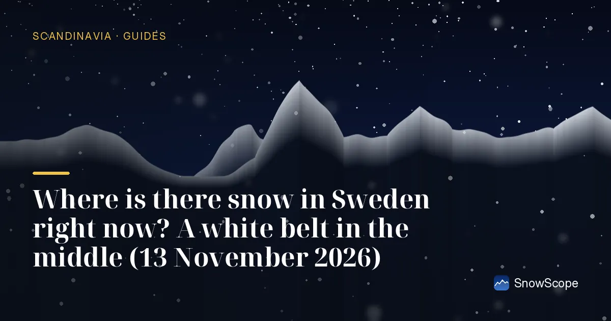

Where is there snow in Sweden right now? A white belt in the middle (13 November 2026)
Sweden's snow on 13 November forms a surprising pattern: a thick band across central regions, while Lapland sits almost empty. Of 322 stations measured that morning, 133 had snow—nearly double the count from the day before. The leader was Sälen at 45 cm, but the story is not about one place: it is about where snow actually fell and where it did not.
See the live snow forecast for Sverige in the SnowScope appSnow depth, powder alerts and the 3D map, free.
The band that stretches across the middle
Draw a line from around Jämtland west to the Västerbotten coast, and almost everything north of it down to roughly the 62nd parallel was white. Between latitudes 62 and 64 degrees—the Jämtland and Västernorrland belt—43 out of 45 stations held snow. South of that, between 64 and 66 degrees, the count was 28 of 34. The deepest values clustered in this zone: Östra Falmark near Skellefteå with 40 cm, Almdalen and Bursiljum both at 38 cm, and Rissna, Gopshus and Strömsund each at 33 cm.
Most of this snow was fresh. Sälen had jumped from 11 cm on the 12th to 45 cm by the morning of the 13th. Östra Falmark went from 1 cm to 40 cm overnight. Bursiljum received its first measurable snow of the season. The pattern held at city level too: Umeå recorded 20 cm, while stations around Östersund ranged from 19 to 24 cm.

Why the north stayed quiet
North of the Arctic Circle, the picture reversed sharply. Only 5 of the 22 weather stations in that zone reported any snow, and the highest reading was just 9 cm. Kiruna itself, at 519 m elevation, measured 0 cm. Jukkasjärvi and Esrange also came in at zero.
This breaks the usual pattern. Kiruna's historical record for 13 November across 46 past winters shows snow in every single year, with a typical depth around 23 cm. The town's normal range is 14 to 35 cm by this date. The 2023–24 winter brought 40 cm to Kiruna on 13 November; last winter had 7 cm. This year's absence is an outlier.
The south: too warm for snow
South of the 60th parallel, snow was rare. Only 31 of 178 stations had any snow at all, and most sat in scattered pockets of Småland and Västergötland forests with just 1 or 2 cm. Gunntorp, 39 km north-east of Göteborg, was the southern outlier with 12 cm. The major cities—Stockholm, Göteborg—had no snow, and neither did the coastal areas.
This is normal for mid-November in the south. Stockholm's historical average for 13 November is 0 cm, with snow arriving on this date in only 11 of the past 46 winters. Göteborg's data are sparse, but the coastal influence keeps the city green through most of November.
What comes in the next few days
The cold that brought snow to central Sweden will linger but will not add much. Forecasts suggest Kiruna and Luleå will gain roughly 2 cm over the weekend, with nights well below -10 °C. The central belt will stay cold and dry, so the new snow that fell on the 13th will remain on the ground.
The south will warm and turn wet. By Monday, rain is expected in Stockholm and Göteborg, with temperatures climbing toward 7 to 9 °C. The snow that fell in isolated pockets will likely vanish.
What this means for skiing and travel
If you are chasing snow this weekend, the central belt—Jämtland, Härjedalen, northern Dalarna, and the Västerbotten coast—is where it is. These areas not only have depth but also gained it overnight, suggesting the ground froze before the snow fell, which is good for stability.
The far north, usually the safest bet in mid-November, is a question mark. Kiruna and the surrounding fell country have almost nothing. If you are heading north, check current station readings before you travel; this year does not follow the script.
In the central white belt, roads in forested areas may be soft where snow fell on unfrozen ground. Gravel roads especially can become rutted. Drive slowly if you are on secondary routes.
Tips for skiers
- Target Jämtland, Härjedalen, northern Dalarna, or the Västerbotten coast if you want snow this weekend. That is where both depth and stability are highest right now.
- Do not assume northern Lapland has snow. Kiruna and the region around it are almost bare, which is unusual for 13 November. Check local station data before making the drive.
- Forest roads in the central snow band may be soft where fresh snow landed on unfrozen ground. Reduce speed on gravel routes to avoid rutting and getting stuck.
- The snow that fell overnight in central regions is likely to persist through the weekend because cold, dry weather follows. Stability is good if the ground froze before the snowfall.
- South of the 60th parallel, expect melt and rain by Monday. Any snow in Småland or Värmland will be gone within days.
About these numbers
Resort snow depths are the deepest snow on the resort's upper slopes on the date shown; they are estimates for an area, not a measurement at one point. Forecasts can change. Always read the official avalanche bulletin before going off-piste.
Cite this report
For research, teaching or the press: the numbers and charts are free to reuse under CC BY 4.0 with this citation.
SnowScope (2026), Where is there snow in Sweden right now? A white belt in the middle (13 November 2026), https://snowscope.app/blog/en/2026/11/where-is-there-snow-in-sweden-13-november-2026.html, accessed 2026-11-13
SnowScope (Atlas Labs). (2026, November 13). Where is there snow in Sweden right now? A white belt in the middle (13 November 2026). SnowScope snow reports. https://snowscope.app/blog/en/2026/11/where-is-there-snow-in-sweden-13-november-2026.html
BibTeX
@misc{snowscope2026whereistheresnowinsweden,
author = {{SnowScope (Atlas Labs)}},
title = {Where is there snow in Sweden right now? A white belt in the middle (13 November 2026)},
year = {2026},
month = nov,
howpublished = {\url{https://snowscope.app/blog/en/2026/11/where-is-there-snow-in-sweden-13-november-2026.html}},
note = {Published 2026-11-13 19:09 UTC; accessed 2026-11-13}
}· CC BY 4.0 · Methods, data and tools →
Follow Sverige
Free: a message when fresh snow is coming, and the forecast every morning.
More snow reports

Himos opens a prepared cross-country loop on 14 November as natural snow remains absent from the forest floor around this Finnish resort.

On 15 December, Hemsedal shows 32 cm at base, 70 cm at mid-mountain and 106 cm at top. Height is everything here.

Hemavan's mid-mountain has 82 cm of snow on a typical 15 December. Every winter in 46 years had 30 cm or more in mid-December. Data from 13 November 2026.